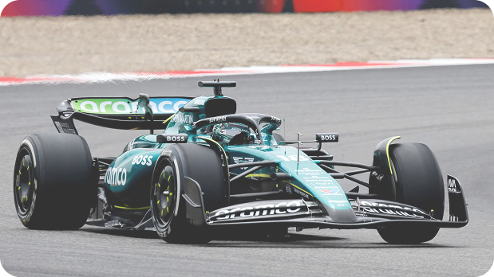

Aston Martin

L'histoire d'Aston Martin en F1 comprend un passage court mais infructueux en tant que constructeur en 1959-1960, mais son équipe actuelle est un changement de nom en 2021 de l'équipe Racing Point, qui elle-même a débuté sous le nom d'équipe Jordan en 1991.

213 mph (343 km/h)
La voiture Aston Martin la plus rapide utilisée en F1 est la voiture de course de l'équipe, comme l'AMR23
Retour à l'accueil